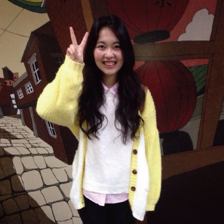

葉宣妤 Milky
國立台北教育大學 數位科技設計學系 玩具與遊戲設計所
sandylove0629@yahoo.com.tw
sandylove0629@gmail.com
國立台北教育大學 數位科技設計學系 玩具與遊戲設計所
sandylove0629@yahoo.com.tw
sandylove0629@gmail.com
書城APP服務介紹員
練習與人溝通，整合所學，有規則、步驟的講解，試著用不同的方式介紹。
防毒軟體銷售員
訓練自己的膽量，還有說話的技巧。生活中，就是要表現自己最好的一面。
測試部實習生
這是我第一的實習。對於未來還不確定的我，我想知道測試部的工作內容還有公司系統和環境。雖然測試部不是我未來的志向，我也很珍惜這段時光。
遊具設計實習生
來到玩遊所，跟著老師接觸玩具、遊具。了解小朋友的喜好，觀察小朋友的遊戲方式，試著想出最佳場地規劃、遊具發想，甚至加入安全性來做探討。
努力將 "喜歡" 結合 "專業"。
這是一個在518外包網得標的案子。此公司希望以三的概念去呈現，因此我把 i 當做人創作出了三個小人物。並被使用在產品貼紙及名片上。
我們想讓大家認識台灣文化 - 八家將。對於八家將，可能大家不夠熟悉，也有可能因為臉譜的色彩而害怕。我們就想讓更多人認識八家將，所以可愛化，而且配合傳統童玩 - 紙娃娃 ，而做了一個一系列的小作品。原本只是一個小小的期末展，但是在今年寒假有機會到日本北海道網走市去展覽。
共同作者：盧語喬
第一次負責APP的介面設計，我不是美術，但是卻是將大家共同討論的功能，加入畫面，並擺設、切圖、調整大小。第一次開始討論按鈕大小符合使用者的觸控面積，慢慢開始會想些細節，與組員共同討論。此比賽，榮幸獲得佳作。我們也在期末展展出，也榮幸獲得碩士班期末展的第三名。讓我更想與同學共同努力創作。
共同作者：盧語喬 陳宜佳 諶昱憲 黃子龍